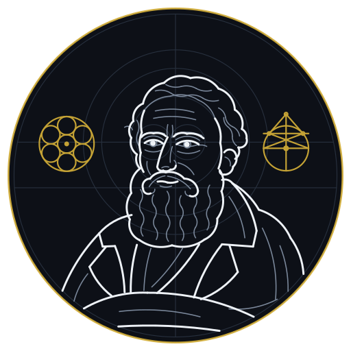

Jakob Steiner¶

Jakob Steiner (1796–1863) answered a startling question with crystalline clarity: how little machinery is needed to build all of Euclidean geometry? In his classic 1833 treatise, Steiner proved that an unmarked straightedge alone suffices for every ruler-and-compass construction—so long as a single fixed auxiliary circle and its center are drawn on the page. This digital archive presents his four-track Book Codex paired with calibrated archival plates, folio scans, and exact SymPy straightedge constructions.
Books in This Collection¶
Berlin · 1833 · 3 Chapters + Appendix · 4 Synchronized Tracks
Geometrical Constructions (*Die geometrischen Constructionen*) — Steiner’s complete 1833 monograph across 51 leaf pages and 26 calibrated diagrams, advancing from harmonic pencils and centers of similitude to the Poncelet–Steiner theorem and 22 appendix problems solved without a compass.
Key Features¶
Four Synchronized Tracks
Navigate seamlessly between the 1833/1895 German primary text, faithful English translation, concise analytical summaries, and scholarly concordance notes.
26 Calibrated Copperplate & SVG Plates
Original copperplate extractions sit beside theme-adaptive .euclid-graphic vector reconstructions tracing parallels, similitude axes, and radical centers.
Exact SymPy Straightedge Engine
Inspect machine-verified Poncelet–Steiner constructions in geometor.steiner.constructions and executable Demos.
Reference & Project¶
Scholarly Apparatus
People — Profiles of Jakob Steiner, Lorenzo Mascheroni, Jean-Victor Poncelet, and cited geometers
Bibliography — Primary 1833 Dümmler and 1895 Ostwald’s Klassiker editions
Glossary — Bilingual German/English terms of harmonic conjugates, similitude, and polarity
About This Project
About & Using This Edition — Scope, scriptorium provenance, and reading guide
Demos & Python Modules — Straightedge algorithms and API reference
Project Log, Todos & Changelog — Development records and release history